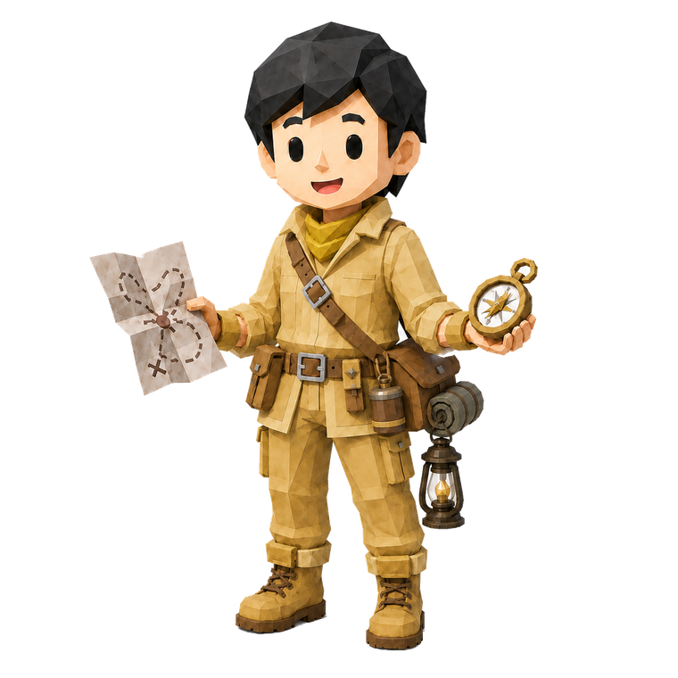
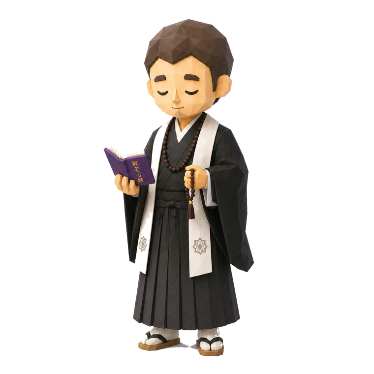
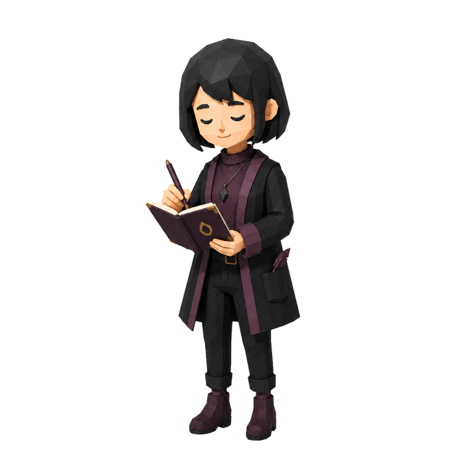
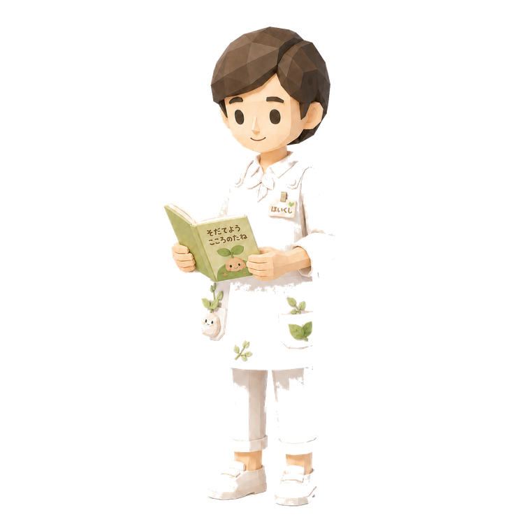

動くほど、自分が見えてくる。

冒険者タイプは、「未知に飛び込む → 体験で学ぶ → 次の挑戦に更新する」というサイクルで自己像を磨いていく人です。新しい場所・人・仕事・遊びに身を置くほどエネルギーが湧き、停滞よりも変化の中でこそ本来の力を発揮します。
ただ勢いに任せて動いているわけではありません。冒険者にとって体験は“素材”であり、その素材を通して自分の価値観や得意領域を一つずつ発見していく。動くことが、自分を知る手段になっているタイプです。
エネルギーは外の世界との接触から生まれる。行動し、人と関わり、刺激を受け取ることで気持ちが前を向く。
現状維持より「昨日の自分を更新すること」に価値を感じる。挑戦そのものが報酬になる。
他者や社会よりまず自分の経験・納得を軸に進む。世界を「自分を試す舞台」として捉える。
最大の武器は、変化を恐れずまず試せる行動力です。周囲が躊躇する局面でも一歩目を踏み出せるため、チームに「前に進む空気」を生み出します。
強みである「動き続ける力」は、裏返すと消耗の原因にもなります。
ウェルビーイング研究では、人の幸福感を支える要素がいくつかの因子に整理されています。冒険者タイプが特に満たされやすい因子は次のとおりです。
「幸せの4因子」のうち、冒険者が最も強く持っているのがこれです。新しいことに挑戦し、自分の可能性を広げているとき、冒険者の幸福度は跳ね上がります。逆にこの因子が満たされない停滞期は、他のタイプ以上に苦しく感じます。挑戦の機会を切らさないことが、あなたの幸福の生命線です。
失敗を引きずらず「次に活かせばいい」と切り替えられる楽観性は、冒険者の回復力の源です。この前向きさを意識的に言葉にする（うまくいかなかった日も「ここを学んだ」と記録する）と、因子がさらに強化されます。
何かに夢中になって時間を忘れる感覚、そして「やりきった」という達成感。冒険者はこの2つを行動の中で自然に得られます。小さくても“やりきる体験”を積むほど、自己肯定感が安定します。
冒険者が忘れがちなのが「つながり因子（感謝・関係性）」と「ありのまま因子（休息・自分を整えること）」です。挑戦の合間に、支えてくれる人へ感謝を向ける時間、何もしない時間を意識して足すと、幸福のバランスが大きく整います。
新しいことに取り組んだ日は、寝る前に「今日の学び3つ／次に試す1つ」をメモ。体験を言語化することで、ただの刺激が“資産”に変わる。
あえて予定を入れない静かな一日を確保。体力・睡眠・食事を整えるこの日が、次の冒険の土台になる。動き続けるための“燃料補給日”。
最初から大きく賭けず、小さく試して当たりを見つけ、当たったものを深掘りする。この循環が冒険者の成長を最も加速させる。
動くうちにブレやすい「何が大事か」を、月初にひとつ書き出す。軸が定まると、挑戦の質が上がる。
冒険者は「動く力」が突き抜けているぶん、「深める力」や「整える力」を持つ相手と組むと、一人では届かない場所まで進めます。

冒険者が外の世界で得てきた経験を、深い洞察へと変えてくれる存在。行動と探究が循環し、体験が“意味”に育つ関係です。

体験を落ち着いて整理し、意味づけしてくれる存在。冒険の経験が流れていかず、しっかり身につきます。

生活リズムや環境という土台を整えてくれる存在。基盤が安定し、行動量が消耗ではなく持続的な成長へ変わります。
あなたの人生に、「同じ場所にとどまり続ける」という選択はあまり多くないでしょう。気づけば新しい環境、新しい挑戦へと足が向いている。変化そのものが、自分らしさを保つ手段になっている ー そんな傾向があります。
あなたにとっての幸せとは、「昨日の自分を少し超えている感覚」です。安定よりも更新、停滞よりも前進。挑戦の最中にこそ、最も生きている実感を覚えるはずです。
「行動力がある人」「勢いのある人」と見られやすいでしょう。あなたの一歩目の速さに勇気づけられている人がいる一方で、内面の葛藤までは見えにくいと思われているかも。弱さや迷いを言葉にできる相手を持つことが、強さを長く保つ鍵になります。
いずれも、未知の領域へ飛び込み、挑戦を重ねながら自分を更新し続けてきた人たちです。